微信公众号[深容Pubmed文献检索] 1. 此处右键：选菜单【翻成中文（简体）】 2. 翻译后，此处右键：选菜单【打印...】成PDF格式
建议屏幕分辨率：1920X1080；如果屏幕太小，可以按Ctrl + 或 Ctrl -缩放网页。

Software Construction
Chapter 8: Software Construction for
Performance
8.1 Metrics, Principles, and Methods
of Construction for Performance
Xu Hanchuan
xhc@hit.edu.cn
May 13, 2019

Outline
8.1 Metrics, Principles, and Methods of Construction for Performance
▪ 1 Performance Metrics
▪ 2 Memory Allocation
– Three modes of object management: Static, Stack-based, and Heap-based
▪ 3 Java Memory Model
▪ 4 Garbage Collection
– Living without Automatic GC
– Living with Automatic GC
▪ 5 Basic Algorithms of Garbage Collection
– Reference counting
– Mark-Sweep
– Mark-Compact
– Copying

Outline
8.1 Metrics, Principles, and Methods of Construction for Performance
▪ 6 Garbage Collection in JVM
▪ 7 Garbage Collection Tuning in JVM
▪ 8 Using I/O Efficiently in Java
▪ Summary

Software Construction
1 Performance Metrics

8.1 Metrics, Principles, and Methods of Construction for Performance
Performance
▪ Performance is the amount of work accomplished by a computer
system.
– Short response time for a given piece of work
– Low utilization of computing resource(s) –CPU, memory, disk, etc.

8.1 Metrics, Principles, and Methods of Construction for Performance
Runtime program performance
▪ Time performance
– Execution time for a single statement, for a complex structure (such as a
loop, I/O, network communication, etc), for the whole program;
– Distribution of execution time of different statements/structures (relative
time distribution)
– Time bottleneck of a program’s execution
▪ Space performance
– Memory consumption for a single variable, for a complex data structure,
and for the whole program;
– Distribution of memory consumption of different variables/data
structures (relative space distribution)
– Space bottleneck of a program’s execution
– Evolution of memory consumption along with time

8.1 Metrics, Principles, and Methods of Construction for Performance
Factors influencing runtime performance
▪ Space performance:
– Memory allocation
– Garbage collection
▪ Time performance:
– Basic statements
– Algorithms
– Data structure
– I/O
– Network communication
– Concurrency / multi-thread / lock
▪ In general, a operation is considered as expensive if this operation
has a long runtime or a high memory consumption.
8.1 Metrics, Principles, and Methods of Construction for Performance
How to get memory consumption?
▪ The total used / free memory of an program can be obtained in the
program via java.lang.Runtime.getRuntime(), and the runtime
has several method which relates to the memory.
public class MemoryPerformanceTest {
public static void main(String[] args) {
List<Person> list = new ArrayList<Person>();
for (int i = 0; i <= 1000000; i++) {
list.add(new Person("Jim", "Knopf"));
}
// Get the Java runtime
Runtime runtime = Runtime.getRuntime();
// Run the garbage collector
runtime.gc();
// Calculate the used memory
long memory = runtime.totalMemory() - runtime.freeMemory();
System.out.println("Used memory is byets:" + memory);
}
}

8.1 Metrics, Principles, and Methods of Construction for Performance
How to get execution time?
▪ Use System.currentTimeMillis() to get the start time and the
end time and calculate the difference.
class TimeTest{
public static void main(String[] args) {
long startTime = System.currentTimeMillis();
long total = 0;
for (int i = 0; i < 10000000; i++) {
total += i;
}
long stopTime = System.currentTimeMillis();
long elapsedTime = stopTime - startTime;
System.out.println(elapsedTime);
}
}

Software Construction
2 Memory Allocation

8.1 Metrics, Principles, and Methods of Construction for Performance
Recall: Memory handling in OS
▪ Native memory is the memory which is available to a process, e.g.
the Java process.
▪ Native memory is controlled by OS and based on physical memory
and other physical devices, e.g. disks, flash memory, etc.
– CPU computes the instructions to execute and stores its computation
results into registers. It can access the normal memory over the memory
bus.
– OS normally uses virtual memory to map the
physical memory to memory which each
process can see. It assigns memory to each
process in a virtual memory space for this
process and maps access to this virtual memory
to the real physical memory. OS通过虚拟内存机制
管理物理内存的使用，将物理内存映射为虚拟内存，
为每个进程分配虚拟内存空间。

8.1 Metrics, Principles, and Methods of Construction for Performance
Memory Management
▪ Memory management is a form of resource management applied to
computer memory.
– The essential requirement of memory management is to provide ways to
dynamically allocate portions of memory to programs at their request
(memory allocation)
– Free it for reuse when no longer needed (garbage collection).
▪ Modern general-purpose computer systems manage memory at two
levels:
– OS level
– Application level

8.1 Metrics, Principles, and Methods of Construction for Performance
What is the problem?
▪ Memory is a scarce and precious resource!
▪ If we had unbounded amounts of memory, we’d never worry.
▪ The PROBLEM is that we don’t have unbounded memory.
8.1 Metrics, Principles, and Methods of Construction for Performance
What can we do?
▪ Dynamically allocate and deallocate memory. 动态分配和释放内存
▪ REUSE deallocated memory. 重用释放的内存
– Allocation means finding a free piece of memory in the heap and
reserving it for the representation of an object.
– Deallocation means changing the status of a piece of memory from
allocated to free.
▪ Dynamical memory allocation is available in many languages, e.g.,
using languages features:
– New() or Constructors allocates a new object
– Delete()
deallocated the object X
▪ Such features allows programmer to handle allocation themselves.

8.1 Metrics, Principles, and Methods of Construction for Performance
Object Model
▪ Objects are represented in memory by some number of bits stored
contiguously(连续地) in memory.
– They consist of a header (not visible to the user program, called mutator)
and zero or more fields.
▪ Objects can contain references to other objects.
– A reference to an object is usually implemented merely by the memory
address of the piece of memory where the object is stored.
▪ Basic operation for allocating space to new objects:
– Create a new object;
– Attach it to the reference x;
– Initialize its fields.
– E.g., Student Peter = new Student(“18S01558”,”Computer”);


8.1 Metrics, Principles, and Methods of Construction for Performance
Object Model
▪ Objects are typically allocated in the heap.
▪ An Object Reference is a pointer to an object (typically merely the
heap address of the start of the object).
▪ Variables contain object references (ignoring primitive data).
▪ Each object can contain a number of variables and thereby
reference other objects.
▪ A reference is attached to at most one object, an object may be
attached to two or more references.

Software Construction
Three modes of object management

8.1 Metrics, Principles, and Methods of Construction for Performance
Static & dynamic allocation
▪ Static allocation — allocation takes place when a program starts –
basically memory is laid out by the compiler
▪ Dynamic allocation — allocate new objects while the program is
executing.
– A simple form of dynamic allocation is stack allocation where objects are
allocated on the program stack and deallocated using a stack discipline.
– Heap allocation is the most general form of allocation: objects are
allocated in the heap.
8.1 Metrics, Principles, and Methods of Construction for Performance
Three modes of object management
▪ The form of object management (particular in OO) is only one of
three commonly found modes:
– Static
– Stack-based
– Heap-based (free)
▪ The choice between these modes determines how an entity can
become attached to an object:
– An entity is a name in the code representing a run-time value, or a
succession of run-time values. Such values are either objects or (possibly
void) references to objects. Entities include attributes, formal routine
arguments, local entities of routines and Result. Entity是指属性、参数、
局部变量和结果等在代码中的名字，其值为对象或对对象的引用。
– The term attached describes associations between entities and objects: at
some stage during execution, an entity x is attached to an object O if the
value of x is either O (for x of expanded type) or a reference to O (for x of
reference type). Attach将entity同object关联/绑定在一起
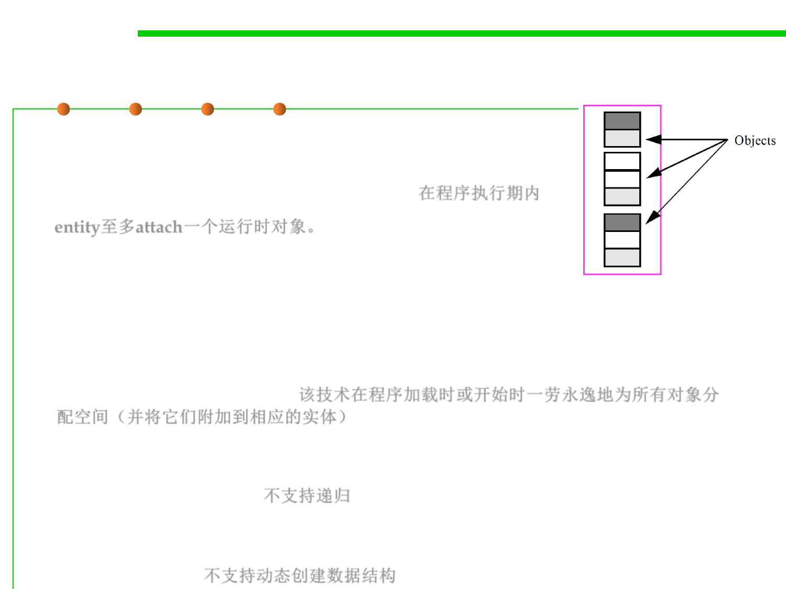
Static mode
8.1 Metrics, Principles, and Methods of Construction for Performance
▪ In the static mode, an entity may become
attached to at most one run-time object during
the entire execution of the software. 在程序执行期内
entity至多attach一个运行时对象。
▪ This is the scheme promoted by languages such
as Fortran, designed to allow an implementation Fixed Memory Area
technique which will allocate space for all
objects (and attach them to the corresponding
entities) once and for all, at program loading time or at the
beginning of execution. 该技术在程序加载时或开始时一劳永逸地为所有对象分
配空间（并将它们附加到相应的实体）
– It precludes recursion, since a recursive routine must be permitted to
have several incarnations active at once, each with its own incarnations of
the routine’s entities. 不支持递归
– It also precludes dynamically created data structures, since the compiler
must be able to deduce the exact size of every data structure from the
software text. 不支持动态创建数据结构
8.1 Metrics, Principles, and Methods of Construction for Performance
Stack-based mode
▪ Stack is where the method invocations and the local variables are
stored.
– If a method is called, its stack frame(栈帧) is put onto the top of the call
stack.
– The stack frame holds the state of the method including which line of code
is executing and the values of all local variables.
– The method at the top of the stack is always the
current running method for that stack.
8.1 Metrics, Principles, and Methods of Construction for Performance
Stack-based mode
▪ An entity may at run time become attached to several objects in
succession, and the run-time mechanisms allocate and deallocate
these objects in last-in, first-out order in the stack.一个entity在运行时
可以先后attach多个对象，运行时机制以堆栈中的后进先出顺序分配和释放这
些对象。
▪ When an object is deallocated, the corresponding entity becomes
attached again to the object to which it was previously attached, if
any.当一个对象被释放时，相应的entity会再次attach到之前attached的对象
（如果有的话）。
8.1 Metrics, Principles, and Methods of Construction for Performance
Stack-based mode
8.1 Metrics, Principles, and Methods of Construction for Performance
Heap-based mode
▪ A heap which is a part of memory that is split into many pieces
each of which either contains the representation of an object or is
unused (in which case we say it is free). 将内存分为多份，每份保存
对象或未使用
▪ Heap-based mode is also called free mode. This is the fully
dynamic mode in which objects are created dynamically through
explicit requests. 也称为自由模式，可通过显式请求动态创建对象的
完全动态模式。
▪ An entity may become successively attached to any number of
objects; the pattern of object creations is usually not predictable at
compile time. Objects may, furthermore, contain references to
other objects. 一个entity可先后attached任意数量的对象; 对象创建的模式
在编译时通常是不可预测的， 对象还可以包含对其他对象的引用。
▪ The free mode allows developers to create the sophisticated
dynamic data structures. 支持创建复杂的动态数据结构。
8.1 Metrics, Principles, and Methods of Construction for Performance
Heap-based mode
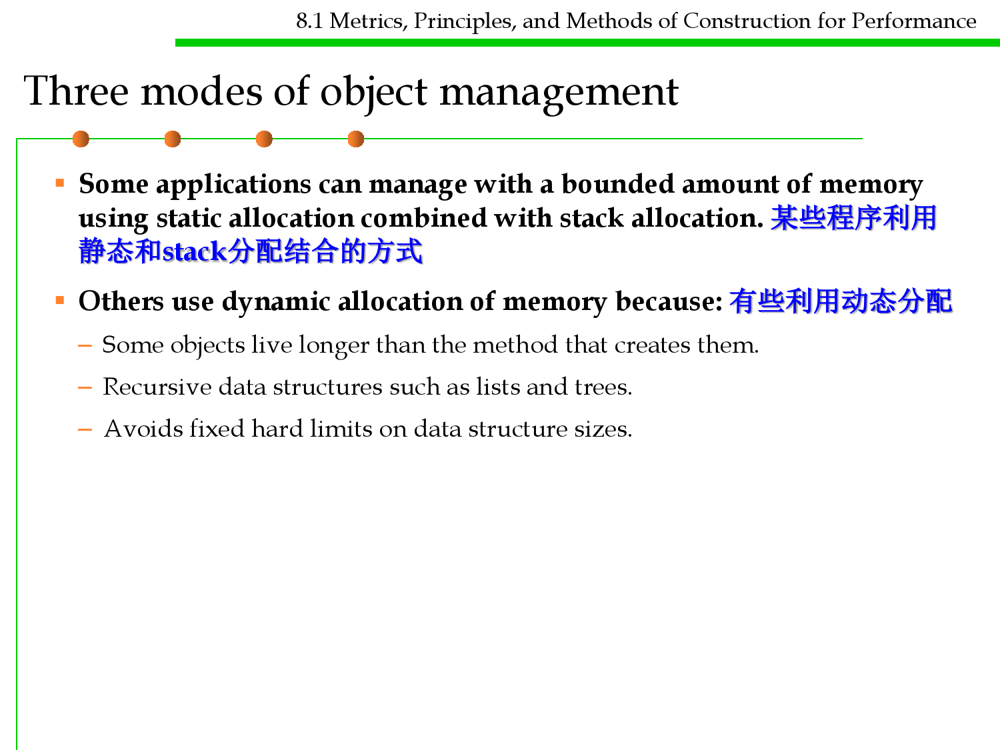
8.1 Metrics, Principles, and Methods of Construction for Performance
Three modes of object management
▪ Some applications can manage with a bounded amount of memory
using static allocation combined with stack allocation. 某些程序利用
静态和stack分配结合的方式
▪ Others use dynamic allocation of memory because: 有些利用动态分配
– Some objects live longer than the method that creates them.
– Recursive data structures such as lists and trees.
– Avoids fixed hard limits on data structure sizes.

Software Construction
3 Java Memory Model

8.1 Metrics, Principles, and Methods of Construction for Performance
Memory in Java
▪ The Java memory model specifies how the Java virtual machine (JVM)
works with the computer's memory (RAM).
▪ JVM is a model of a whole computer so this model naturally includes a
memory model (Java memory model).
– New objects created and placed in the heap. 对象创建在heap中
– Once your application have no reference anymore to an object the Java
garbage collector is allowed to delete this object and remove the memory so
that your application can use this memory again. Java支持对象的自动回收
▪ The original Java memory model was insufficient, so the Java memory
model was revised in Java 1.5.
▪ This version of the Java memory model is still in use in Java 8.
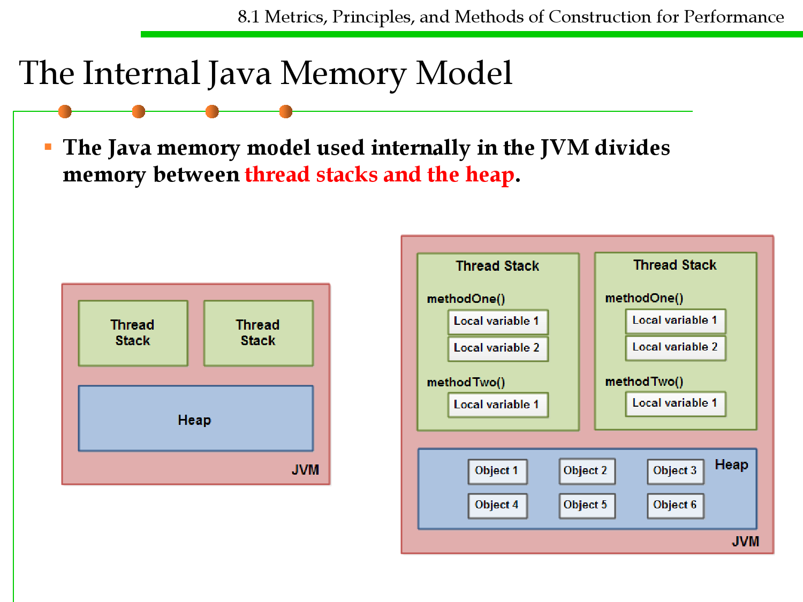
8.1 Metrics, Principles, and Methods of Construction for Performance
The Internal Java Memory Model
▪ The Java memory model used internally in the JVM divides
memory between thread stacks and the heap.
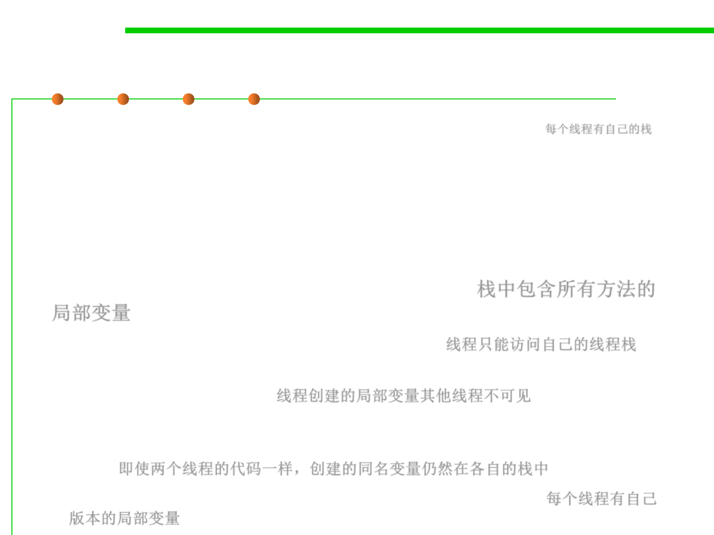
8.1 Metrics, Principles, and Methods of Construction for Performance
The Internal Java Memory Model: Stack
▪ Each thread running in JVM has its own thread stack. 每个线程有自己的栈
– The thread stack contains information about what methods the thread has
called to reach the current point of execution.
– It is called "call stack". As the thread executes its code, the call stack
changes.
▪ The thread stack also contains all local variables for each method
being executed (all methods on the call stack). 栈中包含所有方法的
局部变量
– A thread can only access it‘s own thread stack. 线程只能访问自己的线程栈
– Local variables created by a thread are invisible to all other threads than
the thread who created it. 线程创建的局部变量其他线程不可见
– Even if two threads are executing the exact same code, the two threads
will still create the local variables of that code in each their own thread
stack. 即使两个线程的代码一样，创建的同名变量仍然在各自的栈中
– Thus, each thread has its own version of each local variable. 每个线程有自己
版本的局部变量
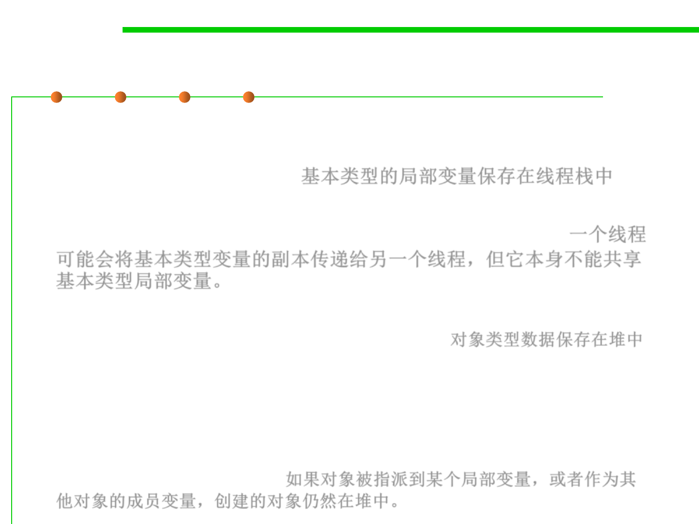
8.1 Metrics, Principles, and Methods of Construction for Performance
The Internal Java Memory Model: Heap
▪ All local variables of primitive types (boolean, byte, short, char, int,
long, float, double) are fully stored on the thread stack and are thus
not visible to other threads. 基本类型的局部变量保存在线程栈中
▪ One thread may pass a copy of a primitive variable to another
thread, but it cannot share the primitive local variable itself.一个线程
可能会将基本类型变量的副本传递给另一个线程，但它本身不能共享
基本类型局部变量。
▪ The heap contains all objects created in your Java application,
regardless of what thread created the object. 对象类型数据保存在堆中
▪ This includes the object versions of the primitive types (e.g. Byte,
Integer, Long, etc).
▪ It does not matter if an object was created and assigned to a local
variable, or created as a member variable of another object, the object
is still stored on the heap. 如果对象被指派到某个局部变量，或者作为其
他对象的成员变量，创建的对象仍然在堆中。

8.1 Metrics, Principles, and Methods of Construction for Performance
Some key points about Java Memory Model
▪ A local variable may be of a primitive type, in which case it is totally kept
on the thread stack. 基本数据类型的局部变量保存在线程栈中
▪ A local variable may also be a reference to an object. In that case the
reference (the local variable) is stored on the thread stack, but the object
itself if stored on the heap. 局部变量引用了对象，引用保存在栈中，对象
本身存储在堆中
▪ An object may contain methods and these methods may contain local
variables. These local variables are also stored on the thread stack, even if
the object that the method belongs to is stored on the heap. 对象包含的方
法和方法包含的局部变量存储在栈中
▪ An object‘s member variables are stored on the heap along with the
object itself. That is true both when the member variable is of a primitive
type, and if it is a reference to an object. 对象的成员变量同对象一起存储在堆中，
不论成员变量的类型是基本类型还是对象类型(对其他对象的引用)
▪ Static class variables are also stored on the heap along with the class
definition. 静态的类变量同类的定义一起保存在堆中

8.1 Metrics, Principles, and Methods of Construction for Performance
Some key points about Java Memory Model
▪ Objects on the heap can be accessed by all threads that have a
reference to the object. 堆中的对象可以被所有拥有引用的线程访问
▪ When a thread has access to an object, it can also get access to that
object's member variables.
▪ If two threads call a method on the same object at the same time,
they will both have access to
the object's member variables,
but each thread will have its
own copy of the local variables.
如果两个线程同时调用同一个对
象上的一个方法，它们都可以访
问该对象的成员变量，但是每个
线程都有自己的局部变量副本。
8.1 Metrics, Principles, and Methods of Construction for Performance
Memory Structure of Java Virtual Machine (JVM)
▪ Stacks
▪ Native Stacks
▪ Heap
▪ Program Counter Register (PC)
▪ Method Area
8.1 Metrics, Principles, and Methods of Construction for Performance
Memory Structure of Java Virtual Machine (JVM)
▪ The stack is used to:
– Pass arguments to methods
– Return a result from a method
– Store intermediate results while evaluating expressions
– Store local variables
▪ The heap is used to:
– Objects
– Arrays
– By using “new” operators
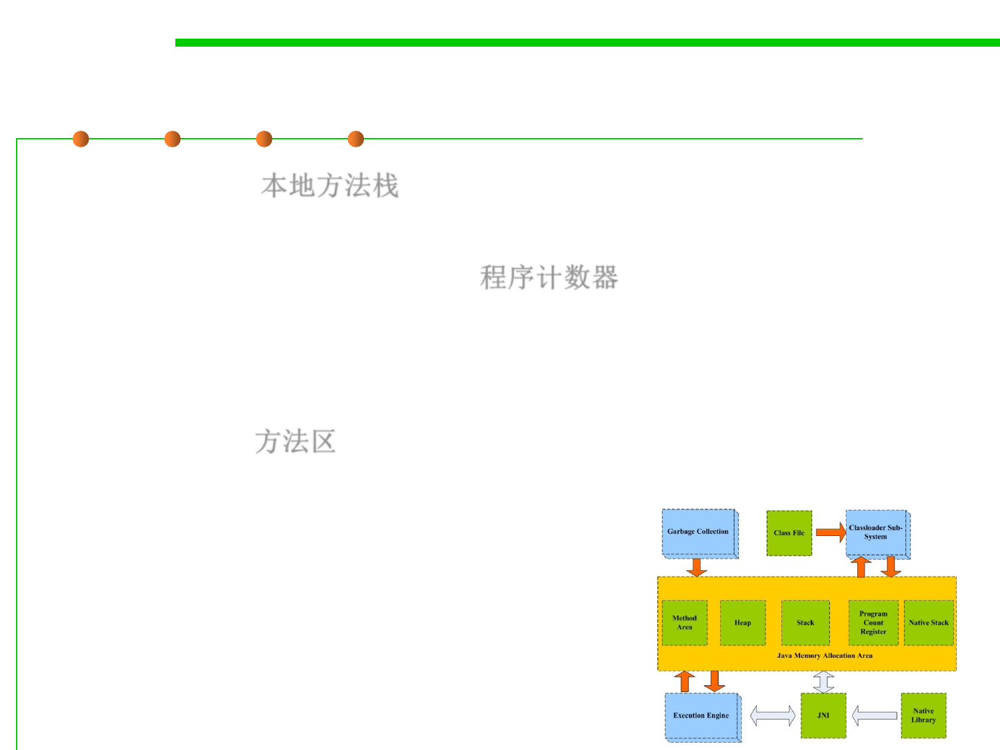
8.1 Metrics, Principles, and Methods of Construction for Performance
Memory Structure of Java Virtual Machine (JVM)
▪ Native Stacks 本地方法栈
– Manage native methods( coded in C) used by JVM
▪ Program Counter Register (PC) 程序计数器
– If the current thread is executing a java method, PC records the Java
bytecode address of the executed method.
– If the current thread is executing a native method, PC is empty.
▪ Method Area 方法区
– The method area is also called the permanent area. It mainly contains the
definition information of constants and classes.

8.1 Metrics, Principles, and Methods of Construction for Performance
Memory Structure of Java Virtual Machine (JVM)
▪ Besides OO concepts, JVM also supports multi-threading. Threads
are directly supported by the JVM.
▪ Two kinds of runtime data areas:
– Shared between all threads
– Private to a single thread
To be discussed detailedly in Chapter 10
Shared
Garbage Collected
Heap
Method area
Thread i
pc
Thread j
pc
Java
Stack
Native
Method
Stack
Java
Stack
Native
Method
Stack


Software Construction
4 Garbage Collection

8.1 Metrics, Principles, and Methods of Construction for Performance
Space reclamation in static modes
▪ In the static mode, the problem does not exist: 静态模式中不存在内
存空间回收问题
– For every object, there is exactly one attached entity;
– Execution needs to retain the object’s space as long as the entity is active.
– So there is no possibility for reclamation in the proper sense.
▪ The ability to create objects dynamically, as in the stack-based and
heap-based modes, raises the question: 动态模式(stack-based,
heap-based)则需要考虑内存空间回收问题
– What to do when an object becomes unused: is it possible to reclaim its
memory space, so as to use it again for one or more new objects in later
creation instructions?

8.1 Metrics, Principles, and Methods of Construction for Performance
Space reclamation in stack-based modes
▪ With the stack-based mode, the objects attached to an entity may
be allocated on a stack.
– Block-structured language make things particularly simple: object
allocation occurs at the same time for all entities declared in a given block,
allowing the use of a single stack for a whole program. 基于块结构的语言
中：在给定块中声明的所有实体同时发生对象分配，从而允许为整个程序
使用单个堆栈。
8.1 Metrics, Principles, and Methods of Construction for Performance
Space reclamation in heap-based (free) modes
▪ With the free mode, things cease to be so simple.
▪ The problem comes from the very power of the mechanism: since
the pattern of object creation is unknown at compile time, it is not
possible to predict when a given object may become useless. Heap
模式中，对象的创建在编译时未知，所以无法预测对象何时无用(可回
收)

8.1 Metrics, Principles, and Methods of Construction for Performance
Reachable Objects vs. Unreachable Objects
▪ At any point during the execution of a system, the set of origins /
roots is made of the following objects:
– The system’s root object.
– Any object attached to a local entity or formal argument of a routine
currently being executed (including the local entity result for a function).
– 根集合由系统的root对象以及局部entity、子程序的参数或返回值构成
▪ What are the roots of a computation? Root的确定是语言相关的
– Determining roots is, in general, language-dependent
– Depends on the run-time structure defined by the underlying language.
▪ In common language implementations roots include
– Words in the static area
– Registers
– Words on the execution stack that point into the heap.

8.1 Metrics, Principles, and Methods of Construction for Performance
The roots of a computation
▪ Any dependent, direct or indirect, of these origins/roots is
reachable, and any other object is unreachable:
– For an unreachable object, it is possible to reclaim the memory it occupies
(for example to recycle it for other objects) without affecting the correct
semantics of the system’s execution
▪ The first step towards addressing the problem of memory
management under the free mode is to separate the reachable
objects from the unreachable ones. 在free模式下管理内存，第一步
是区分可达对象和不可达对象
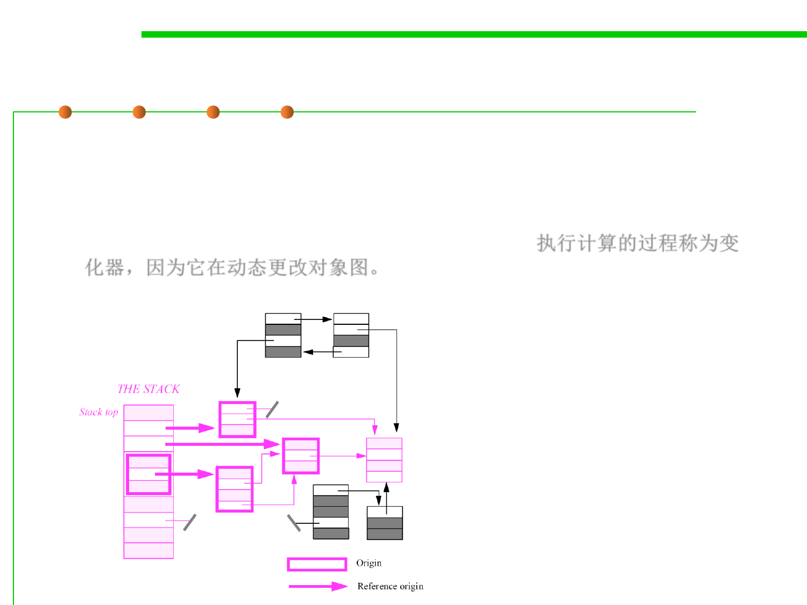 
8.1 Metrics, Principles, and Methods of Construction for Performance
Live objects vs. dead objects
▪ The objects and references can be considered a directed graph:
– The live objects of the graph are those reachable from a root.
– The process executing a computation is called the mutator because it is
viewed as dynamically changing the object graph. 执行计算的过程称为变
化器，因为它在动态更改对象图。
Live objects (in color)
and dead objects (in
black) in a combined
stack-based and free
model

8.1 Metrics, Principles, and Methods of Construction for Performance
Tracing reachable/unreachable objects
▪ We can formalize our definition of reachability:
live = { N Objects | ( r Roots . r → N) ( M live . M → N) }
▪ We can encode this definition simply:
– Step1: Start at the roots; the live set is empty
– Step2: Add any object that a root points at to the live set
– Step3: Repeat
Add any object a live object points at to the live set
Until no new live objects are found
– Step4: Any objects not in the live set are garbage
8.1 Metrics, Principles, and Methods of Construction for Performance
What is garbage?
▪ Almost all garbage collectors assume the following definition of
live objects called liveness by reachability: if you can get to an
object, then it is live. 如果一个对象是可达的，则为存活对象。
▪ More formally, an object is live if and only if:
– It is referenced in a predefined variable called a root, 被root中的对象指向
– Or, it is referenced in a variable contained in a live object (i.e. it is
transitively referenced from a root). 被live中的对象指向(从root间接指向)
▪ Non-live objects are called dead objects, i.e. garbage.

8.1 Metrics, Principles, and Methods of Construction for Performance
Garbage Collection
▪ Identifying garbage and deallocating the memory it occupies is
called Garbage Collection(GC).
▪ Why is garbage collection needed?
– Language requirement: many OO languages assume GC, e.g. allocated
objects may survive much longer than the method that created them
– Problem requirement: the nature of the problem may make it very
hard/impossible to determine when something is garbage

8.1 Metrics, Principles, and Methods of Construction for Performance
Garbage Collection
▪ We can try to handle the garbage collection housekeeping chores
related to object allocation and deallocation ourselves.
▪ Such housekeeping can be simple but for many applications the
chores become complex – and error prone.
▪ Can we do it ourselves?
▪ Should it be automatic??

Software Construction
Living without Automatic GC

8.1 Metrics, Principles, and Methods of Construction for Performance
Living without automatic GC: Doing it yourself
▪ Defensive programming
▪ Pairing Principle
▪ The Ownership concept
▪ Monitoring technique
▪ Administrator technique
▪ Tools

8.1 Metrics, Principles, and Methods of Construction for Performance
Defensive programming
▪ Defensive strategies for doing without GC
▪ Sharing:
– Copying objects instead of sharing (defensive copying)
– Transform a global deallocation decision to a local one
▪ Can be wasteful of space, but can be useful.
▪ Example:
– Everyone gets their own set of lights: turn your lights off when leaving.
(Simple, but obviously wasteful.) 每个人拥有自己的灯光系统，自己负责自
己灯光的开关

8.1 Metrics, Principles, and Methods of Construction for Performance
Pairing Principle
▪ For each new() pair it with a delete(), make sure there is a one-to-
one correspondence.
▪ For every new() check that the corresponding delete() is there.
▪ One way is to have the allocating object also be the deallocating
object. 一种策略：让产生内存分配的对象也作为释放该内存的对象
▪ Example
– If you turned the light on, YOU turn it off. 谁开的灯，谁负责关闭
– Allocate in the constructor; deallocate in the destructor.
Class A {
Xclass X;
void A() { X = new Xclass;}
void ~A() { delete X;}
...
}
8.1 Metrics, Principles, and Methods of Construction for Performance
Ownership Concept
▪ Observation: Objects are often passed around
– Thus it is often an object other than the creator who must do the
deallocation.
▪ Ownership Concept
– Initially, the allocating object is the owner of the newly allocated object.
When passing a reference to the allocated object, the ownership can also
be passed. (The previous owner should throw away the reference – it may
become dangling very soon!)
– Only the owner is allowed to deallocate the object; the last owner does the
deallocation.
– Each owner either passes on the ownership rights – or deallocates.
– 只有拥有者被允许释放该对象，最后的拥有者执行释放，每个拥有者或者
传递所有权或者释放。

8.1 Metrics, Principles, and Methods of Construction for Performance
Monitoring Technique
▪ A simple mechanism to help find bugs is to maintain a table of
allocated objects. 可通过维护一个对象分配表发现内存分配错误
▪ Malloc() is replaced by a version that store the address of newly
allocated objects in a table.
▪ Free() is replaced by a version that checks the table before
freeing.
▪ 分配和释放前都要检查内存分配表
▪ Such monitoring can help find bugs:
– memory leaks (the table will fill with a particular type of object), 内存泄漏
– dangling references (the table can be checked to see, if a reference is valid
before using it) 悬挂引用
– double deallocations (free will protest if a non-allocated object is freed).
重复释放
8.1 Metrics, Principles, and Methods of Construction for Performance
Multiple Owners: Shared Objects
▪ Handling Shared Objects Using Reference Counting
– We could attempt to handle shared objects by trying to keep track of
multiple owners, e.g., by expanding the monitoring table by a count field.
– For every new owner, we must increment the count.
– And decrement it every time an owner is done with the object.
– When the last owner is done (the count goes to zero), the object is
deallocated.
– 通过计数器来记录对象的引用数目
– Requires extra code for deallocation, allocation, copying of references, etc.

8.1 Metrics, Principles, and Methods of Construction for Performance
Dangers of Explicit Deallocation
▪ With explicit deallocation, the programmer ends up:
– Doing too little
• Garbage objects are not deallocated and slowly but surely clutters memory and
so the program runs out of memory (such a failure to delete garbage objects is
called a memory leak). 清理内存过于缓慢，造成可用内存不足(内存泄露)
– Doing too much
• Throwing away a non-garbage object. Subsequent use of a live reference to the
object will cause the program to fail in inexplicable ways. Such a reference is a
dangling reference.
• Throwing away a garbage object twice! Likely to break the memory manager.
• 清理了非垃圾对象，造成悬挂指针；重复释放，破坏了内存管理
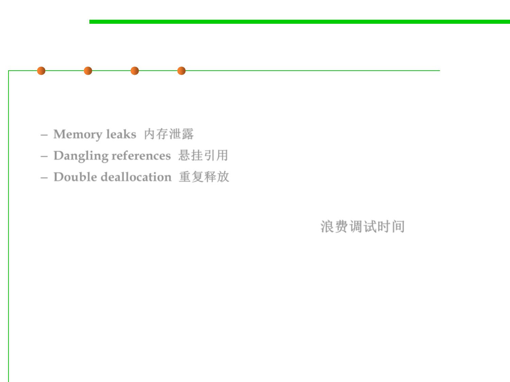
8.1 Metrics, Principles, and Methods of Construction for Performance
The REAL bad thing about explicit deallocation
▪ The problems are real and omnipresent in explicit deallocation
systems and they cause the real problem
– Memory leaks 内存泄露
– Dangling references 悬挂引用
– Double deallocation 重复释放
▪ Wasting huge amounts of debugging time! 浪费调试时间
▪ Despite this, programs may still fail in mysterious ways long after
being put into production.
▪ Finding and fixing MM bugs can account for 40% of debug time.

Software Construction
Living with Automatic GC

8.1 Metrics, Principles, and Methods of Construction for Performance
Why AUTOMATIC Garbage Collection?
▪ Because human programmers just can’t get it right:
– Too little is collected leading to memory leaks
– Too much is collected leading to broken programs.

8.1 Metrics, Principles, and Methods of Construction for Performance
Memory leaks?
▪ Human programmers can:
– Forget to delete an object when it is no longer needed.
– Return a newly allocated object – but when will it be deallocated?
– Not figure out when a shared objects should be deleted.
▪ Sharing is a significant problem
– Can be handled by using the principle last one to leave the room turns off
the light.
▪ However, this is easily forgotten, and, worse, in a large building, it
can be close to impossible to detect that you are the last!

8.1 Metrics, Principles, and Methods of Construction for Performance
Dangling Reference/Pointers
▪ Eager human programmers can delete objects too early leading to
dangling reference/pointers
▪ Consider an object that is shared between two different parts of a
program each having its own pointer to the object. If one of the
pointers is deleted then the other pointer is left pointing to a non-
existent object – we say that it is a dangling pointer.
– Memory leaks and dangling pointers are two sides of the same coin: The
difficulty is managing objects in the presences of sharing.

Software Construction
5 Basic Algorithms of Garbage
Collection

8.1 Metrics, Principles, and Methods of Construction for Performance
Cost Metrics for GC
▪ Execution time
– total execution time
– distribution of GC execution
time
– time to allocate a new object
▪ Delay time
– length of disruptive pauses
– zombie times
▪ Memory usage
– additional memory overhead
– fragmentation
– virtual memory and cache
performance
▪ Other important metrics
– comprehensiveness
– implementation simplicity and
robustness

8.1 Metrics, Principles, and Methods of Construction for Performance
The basic algorithms of GC
▪ The main task of GC is to separate the reachable objects from the
unreachable ones( live objects from dead objects). GC的主要任务是
区分可达对象和不可达对象(存活对象与死亡对象)
▪ Reference counting: 引用计数
– Keep a note on each object, indicating the number of live references to the
object. If an object’s reference count goes to zero, throw the object out (it’s
dead).
▪ Mark-Sweep: 标记-清除
– Put a note on objects you need (roots).
– Then recursively put a note on anything needed by a live object.
– Afterwards, check all objects and throw out objects without notes.
8.1 Metrics, Principles, and Methods of Construction for Performance
The basic algorithms of GC
▪ Mark-Compact: 标记-压缩
– Put notes on objects you need.
– Move anything with a note on it to the back of the garage.
– Burn everything at the front of the garage (it’s all dead).
▪ Copying: 复制
– Move objects you need to a new garage.
– Then recursively move anything needed by an object in the new garage.
– Afterwards, burn down the old garage (any objects in it are dead)!

Software Construction
Reference counting

8.1 Metrics, Principles, and Methods of Construction for Performance
Reference counting
▪ Reference counting: a mechanism to share ownership
▪ Goal: to identify when you are the only owner, and thus you can
make the disposal decision.
▪ Basic idea: count the number of references from live objects.
– Each object has a reference count (RC)
– When a reference is copied, the referent’s RC is incremented
– When a reference is deleted, the referent’s RC is decremented
– An object can be reclaimed when its RC = 0

8.1 Metrics, Principles, and Methods of Construction for Performance
Reference counting
▪ Recursive freeing 递归释放
– Once an object’s RC=0, it can be freed.
– But object may contain references to further objects.
– Before this object is freed, the RCs of its constituents should also be freed.
New() {
if free_list == nil
abort "Memory exhausted"
newcell = allocate()
RC(newcell) = 1
return newcell
}
Update(R, S) {
RC(S) = RC(S) + 1
delete(*R)
*R = S
}
delete(T) {
RC(T) = RC(T) - 1
if RC(T) == 0 {
for U in Children(T)
delete(*U)
free(T)
}
}
free(N) {
next(N) = free_list;
free_list = N;
}
8.1 Metrics, Principles, and Methods of Construction for Performance
Reference counting
R
root
T
S
R
root
T
S
Update(left(R), S)
8.1 Metrics, Principles, and Methods of Construction for Performance
A pitfall of reference counting: reference cycles
▪ reference cycles, an object which refers directly or indirectly to itself.
objA = new Class(); //RC(M1)=1
objB = new Class(); //RC(M2)=1
objA.instance = objB; //RC(M2)=2
objB.instance = objA; //RC(M1)=2
objA
objcB
121
M1
objA = null; //RC(M1)=1
objB = null; //RC(M2)=1
▪ Both of the chunks above are garbage;
121
M2
▪ Both of the chunks above have a reference count of 1
▪ Neither chunk will be reclaimed
▪ Reference counting fails conservatively
– it may not collect all the garbage 可能不会收集所有的垃圾
– but it will never throw away non-garbage 永远不会扔掉非垃圾

8.1 Metrics, Principles, and Methods of Construction for Performance
Advantages of reference counting
▪ Simple to implement 实现简单
▪ Costs distributed throughout program 代价均匀分布
▪ Good locality of reference: only touch old and new targets‘ RCs
▪ Works well because few objects are shared and many are
short-lived
▪ Zombie time minimized
– the zombie time is the time from when an object becomes garbage until
it is collected 对象从变成“垃圾”到被回收的时间
▪ Immediate finalization is possible (due to near zero zombie time)

8.1 Metrics, Principles, and Methods of Construction for Performance
Disadvantages of reference counting
▪ Not comprehensive (does not collect all garbage): cannot reclaim
cyclic data structures
▪ High cost of manipulating RCs: cost is ever-present even if no
garbage is collected
▪ Bad for concurrency; RC manipulations must be atomic — need
Compare&Swap operation
▪ Tightly coupled interface to mutator
▪ High space overheads
▪ Recursive freeing cascade is only bounded by heap size
▪ has problems with reference cycles (so in JVM GC, RC is not used!)

Software Construction
Mark-Sweep&Mark-Compact

8.1 Metrics, Principles, and Methods of Construction for Performance
Mark-Sweep
▪ Mark-sweep is such a tracing algorithm — it works by following
(tracing) references from live objects to find other live objects. 通过
跟踪活动对象的引用来查找其他活动对象。
▪ Implementation of the live set:
– Each object has a mark-bit associated with it, indicating whether it is a
member of the live set. 每个对象都有一个标志，标志是否属于live集
▪ There are two phases:
– Mark phase:
• starting from the roots, the graph is traced and the mark-bit is set in each
unmarked object encountered.
• At the end of the mark phase, unmarked objects are garbage.
– Sweep phase: starting from the bottom, the heap is swept
• mark-bit not set: the object is reclaimed
• mark-bit set:the mark-bit is cleared

8.1 Metrics, Principles, and Methods of Construction for Performance
Mark-Sweep
root
mark-bit

8.1 Metrics, Principles, and Methods of Construction for Performance
Mark-Sweep
root
root
After GC
live
garbage
free
reference
8.1 Metrics, Principles, and Methods of Construction for Performance
Mark-Compact
▪ Mark-Compact:
– Put notes on objects you need (as Mark-Sweep).
– Move anything with a note on it to the back of the garage.
– Burn everything at the front of the garage (it’s all dead).
root
After GC
live
garbage
free
reference
8.1 Metrics, Principles, and Methods of Construction for Performance
The mark-stack
▪ The simplest solution is to implement marking recursively: walk a
minimum spanning tree of the object graph 方法1：递归遍历进行标
记，遍历对象图的最小生成树
mark(N) {
if markBit(N) == UNMARKED {
markBit(N) = MARKED
for M in Children(N)
mark(*M)
}
}
▪ A more efficient method is to use a marking stack: repeat until the
marking stack is empty. 方法2：标记栈，重复直到标记栈为空
– Pop the top item
– If it is unmarked, mark it.
– If it is a branch point in the graph, push any unmarked children onto the
stack

8.1 Metrics, Principles, and Methods of Construction for Performance
The mark-stack
New() {
if free_pool.empty
markHeap()
sweep()
newobj = allocate()
return newobj
}
markHeap() {
markStack = empty
for R in Roots
markBit(R) = MARKED
markStack.push(R)
mark()
}
mark() {
while markStack not empty {
N = pop(markStack)
for M in Children(N)
if markBit(M)== UNMARKED {
markBit(M) = MARKED
if not atom(*M)
push(markStack,*M)
}
}
}
sweep() {
N = Heap_bottom
while N < Heap_top
if markBit(N) == UNMARKED
free (N)
else markBit(N) = UNMARKED
N += N.size
}


8.1 Metrics, Principles, and Methods of Construction for Performance
Advantages of mark-sweep
▪ Comprehensive: cyclic garbage collected naturally
▪ No run-time overhead on pointer manipulations
▪ Loosely coupled to mutator
▪ Does not move objects
– does not break any mutator invariants
– optimiser-friendly
– requires only one reference to each live object to be discovered
(rather than having to find every reference)
8.1 Metrics, Principles, and Methods of Construction for Performance
Disadvantages of mark-sweep
▪ Stop/start nature leads to disruptive pauses and long zombie times.
▪ Complexity is O(heap) rather than O(live)
– every live object is visited in mark phase
– every object, alive or dead, is visited in sweep phase
▪ Degrades with residency (heap occupancy) 堆占用高时性能降低
– the collector needs headroom in the heap to avoid thrashing
– Example: lots of marking to do if heap is full and we do this often
▪ Fragmentation and mark-stack overflow are issues 造成碎片
▪ Tracing collectors must be able to find roots (unlike reference
counting) 需要找到root
– This needs some understanding of the run-time system or cooperation
from the compiler.

Software Construction
Fragmentation and Copying
8.1 Metrics, Principles, and Methods of Construction for Performance
Fragmentation
▪ Fragmentation: inability to use available memory
– External: allocated memory scattered into blocks; free blocks cannot be
coalesced
– Internal: memory manager allocated more space than actually required —
common causes are headers, rounding sizes up
▪ Fragmentation is a problem for explicit memory managers as well;
free() is often not free.
allocate()

Copying
8.1 Metrics, Principles, and Methods of Construction for Performance
▪ GC is a set-partitioning problem
– A mark-bit is one way of defining two sets.
▪ Mark-compact physically moves members of the live set to a
different part of the heap
– the free pointer marks the dividing line between live data and memory
that can be overwritten
▪ Copying collection is a simpler solution: it picks out live objects
and copies them to a ‘fresh’ heap

8.1 Metrics, Principles, and Methods of Construction for Performance
Copying garbage collection
▪ Divide heap into 2 halves called semi-spaces and named
Fromspace and Tospace
▪ Allocate objects in Tospace
▪ When Tospace is full
– Flip(翻转) the roles of the semi-spaces
– Pick out all live data in Fromspace and copy them to Tospace
– Preserve sharing by leaving a forwarding address in the Fromspace
replica
– Use Tospace objects as a work queue
8.1 Metrics, Principles, and Methods of Construction for Performance
Copying garbage collection
live
GC
garbage
free
move

8.1 Metrics, Principles, and Methods of Construction for Performance
ReRgeisgteisrtsers
Copying GC ExampleAA A'
B' BB
CC
C'
DD
D'
EE
E'
FF F'
GG G'
FrFomrosmpsapcaece
A'
B'
C' D'
E'
F'
G'
scan=free
so collection is complete
frferee
scsacnan
ToTsopsapcaece


8.1 Metrics, Principles, and Methods of Construction for Performance
Copying garbage collection
flip(){
Fromspace, Tospace = Tospace, Fromspace
top_of_space = Tospace + space_size
scan = free = Tospace
for R in Roots {R = copy(R)}
while scan < free {
for P in Children(scan) {*P = copy(*P)}
scan = scan + size (scan)
}
}
copy(P) {
if forwarded(P){return forwarding_address(P)}
else {
addr = free
move(P,free)
free = free + size(P)
forwarding_address(P) = addr
return addr
}
}

8.1 Metrics, Principles, and Methods of Construction for Performance
Advantages of copying GC
▪ Compaction for free
▪ Allocation is very cheap for all object sizes
– out-of-space check is pointer comparison
– simply increment free pointer to allocate
▪ Only live data is processed (commonly a small fraction of the heap)
▪ Fixed space overheads
– free and scan pointers
– forwarding addresses can be written over user data
▪ Comprehensive: cyclic garbage collected naturally
▪ Simple to implement a reasonably efficient copying GC
8.1 Metrics, Principles, and Methods of Construction for Performance
Disadvantages of copying GC
▪ Stop-and-copy may be disruptive
▪ Degrades with residency 堆空间的使用性能降低
▪ Requires twice the address space of other simple collectors
– touch twice as many pages
– trade-off against fragmentation
▪ Cost of copying large objects
▪ Long-lived data may be repeatedly copied
▪ All references must be updated
▪ Moving objects may break mutator invariants
▪ Breadth-first copying may disturb locality patterns
8.1 Metrics, Principles, and Methods of Construction for Performance
Complexity: caveat emptor买者自负
▪ Claim: “Copying is always better than mark-sweep GC” 复制具有
更好的效果
▪ The collectors we've seen so far are very simple minded
Let us compare their basic performance…
▪ Copying is more expensive than setting a bit 复制代价高于标记
▪ Efficient implementations of mark-sweep are dominated by cost of
mark phase 标记-移除方法的有效实现主要在于标记阶段的成本
– linear scanning less expensive than tracing, and
– cost of sweep can be reduced further

8.1 Metrics, Principles, and Methods of Construction for Performance
Mark-sweep vs. copying
M heap size
R live memory (residency)
r = R/M
▪Time
tCopy = aR
tMS = bR + cM
▪Space recovered
mCopy = M/2 – R
mMS = M – R
1/c
▪Efficiency m/t
eCopy = (1-2r)/2ar
eMS = (1-r)/(br + c)
0
0
Copying
Mark-Sweep
r*
0.5 residency, r
1

Software Construction
6 Garbage Collection in JVM
8.1 Metrics, Principles, and Methods of Construction for Performance
Java Garbage Collector
▪ The Java garbage collector can logically separate the heap into
different areas, so that the GC can faster identify objects which can
get removed. Java垃圾回收将堆划分成不同的区域(generation代)，
以便GC可以更快地识别可以删除的对象
▪ The JVM automatically re-collects the memory which is not used
any more.
– The memory for objects which are not referred any more will be
automatically released by the garbage collector.
– To see that the garbage collector starts working add the command line
argument "-verbose:gc" to your virtual machine.
8.1 Metrics, Principles, and Methods of Construction for Performance
Garbage Collection in JVM
▪ The HotSpot VM (Sun JVM) has three major spaces: young
generation, old generation, and permanent/metaspace generation.
– When a Java application allocates Java objects, those objects are allocated
in the young generation space. 新对象分配到young generation中
– Objects that survive, that is, those that remain live, after some number of
minor garbage collections are promoted into the old generation space. GC
后仍然存活的对象，提升到old generation中
– The permanent generation space holds VM and Java class metadata as
well as interned Strings and class static variables PermGen/Metaspace中
保存VM和class的元数据，以及类的静态变量
metaspace
8.1 Metrics, Principles, and Methods of Construction for Performance
Garbage Collection in JVM


8.1 Metrics, Principles, and Methods of Construction for Performance
Generational Collection GC algorithms
▪ Generational Collection GC algorithms
– The various GC algorithms discussed above have their own advantages
and disadvantages. It’s wise to use appropriate algorithm according to the
characteristics of GC objects.
▪ Generational Collection divides memory space into several pieces
(young generation, old (tenured) generation, and permanent
generation) /metaspace and use different GC algorithms according
to the characteristics of each memory pieces, in order to improve
the efficiency of garbage collection. 根据不同代的不同特征，采用不
同的GC算法
8.1 Metrics, Principles, and Methods of Construction for Performance
The Yong and Old Generations
▪ In the young generation
– Each time garbage collection will find a large number of objects die, and
only a small amount survive. 每次GC会发现大量死亡对象，少量存活对象
– So the copying algorithm is appropriate which only needs to pay the cost of
copying a small amount of living objects. 复制算法适合，代价低
▪ In the old generation
– Because objects have a high survival rate and no additional memory space to
be allocated, the Mark-Sweep or Mark-Compact algorithm must be used for
collection. 对象存活率高，适合采用标记算法

8.1 Metrics, Principles, and Methods of Construction for Performance
The PermGen and Metaspace
▪ PermGen (Permanent Generation) is a special heap space separated
from the main memory heap.
▪ The JVM keeps track of loaded class metadata in the PermGen.
Additionally, the JVM stores all the static content in this memory
section. This includes all the static methods, primitive variables, and
references to the static objects. Furthermore, it contains data about
bytecode, names and JIT information. Before Java 7, the String Pool
was also part of this memory. PermGen中保存类的定义、静态方法
、静态对象的引用等内容
▪ With its limited memory size, PermGen is involved in generating the
famous OutOfMemoryError. Simply put, the class loaders aren’t
garbage collected properly and, as a result, generated a memory leak.
Therefore, we receive a memory space error; this happens mostly on
development environment while creating new class loaders. 缺点：
PermGen的容量是固定的(缺省或指定)， 固定的容量容易导致运行时
的内存溢出错误

8.1 Metrics, Principles, and Methods of Construction for Performance
The PermGen and Meatspace
▪ Simply put, Metaspace is a new memory space – starting from the Java
8 version; it has replaced the older PermGen memory space. The most
significant difference is how it handles the memory allocation. Java 8
开始，用Metaspace替代了PermGen，区别在内存分配方面
▪ As a result, this native memory region grows automatically by default.
Additionally, the garbage collection process also gains some benefits
from this change. The garbage collector now automatically triggers
cleaning of the dead classes once the class metadata usage reaches its
maximum metaspace size. Metaspace的容量是自动增长的，此外，当
类的元数据使用达到了metaspace最大值时，会自动触发GC
▪ Therefore, with this improvement, JVM reduces the chance to get
the OutOfMemory error. 降低了OutOfMemory 的风险
▪ Despite all of this improvements, we still need to monitor and tune
up the metaspace to avoid memory leaks. 但仍然需要监控和调优，避
免内存泄漏
8.1 Metrics, Principles, and Methods of Construction for Performance
When Garbage Collection occurs
▪ It is important to understand that a garbage collection occurs when
any one of the three spaces, young generation, old generation, or
permanent/meatspace generation, is in a state where it can no
longer satisfy an allocation event.
▪ In other words, a garbage collection occurs when any one of those
three spaces is considered full and there is some request for
additional space that is not available. 三个空间任何一个已满，且存
在对空间的额外需求时，会发生GC

8.1 Metrics, Principles, and Methods of Construction for Performance
Minor, Major and Full Garbage Collection
▪ Minor Collection for young generation
▪ Major Collection for old generation
▪ Full Collection for young、old and permanent generation
▪ When the young generation space does not have enough room
available to satisfy a Java object allocation, the HotSpot VM performs
a minor garbage collection to free up space. Minor garbage
collections tend to be short in duration relative to full garbage
collections. 年轻代中内存不够时，发生Minor GC
▪ Objects that remain live for some number of minor garbage
collections eventually get promoted (copied) to the old generation
space. Minor GC后存活的对象升级到老年代
▪ When the old generation space no longer has available space for
promoted objects, the HotSpot VM performs a full garbage
collection. 老年代空间不够时，进行full GC
8.1 Metrics, Principles, and Methods of Construction for Performance
Minor, Major and Full Garbage Collection
▪ It actually performs a full garbage collection when it determines
there is not enough available space for object promotions from the
next minor garbage collection. This is a less costly approach rather
than being in the middle of a minor garbage collection and
discovering that the promotion of an object will fail.
▪ Recovering from an object promotion failure is an expensive
operation. A full garbage collection also occurs when the
permanent generation space does not have enough available space
to store additional VM or class metadata. full GC针对年轻代、老年
代和永久代，当没有空间提供给minor GC将对象提升到老年代中，
或者永久代中无空间保存class元数据时发生。

Software Construction
7 Garbage Collection Tuning in JVM

8.1 Metrics, Principles, and Methods of Construction for Performance
Performance Considerations in GC
▪ Performance Considerations
– Throughput is the percentage of total time not spent in garbage collection
considered over long periods of time. Throughput includes time spent in
allocation (but tuning for speed of allocation is generally not needed). 吞吐
量:总时间中非用于垃圾回收的时间
– Pauses are the times when an application appears unresponsive because
garbage collection is occurring. 暂停: 由于GC导致的暂停次数
▪ Users have different requirements of garbage collection. For
example, some consider the right metric for a web server to be
throughput because pauses during garbage collection may be
tolerable or simply obscured by network latencies. However, in an
interactive graphics program, even short pauses may negatively
affect the user experience. 不同用户有不同的GC需求，E.g.，Web用
户追求高吞吐量，而图形交互程序则追求低暂停。

8.1 Metrics, Principles, and Methods of Construction for Performance
Performance Considerations in GC
▪ Some users are sensitive to other considerations.
– Footprint is the working set of a process, measured in pages and cache
lines. On systems with limited physical memory or many processes,
footprint may dictate scalability(可伸缩性).
– Promptness(及时性) is the time between when an object becomes dead and
when the memory becomes available, an important consideration for
distributed systems, including Remote Method Invocation (RMI).
8.1 Metrics, Principles, and Methods of Construction for Performance
Performance Considerations in GC
▪ In general, choosing the size for a particular generation is a trade-
off between these considerations. For example, a very large young
generation may maximize throughput, but does so at the expense of
footprint, promptness, and pause times. Young generation pauses
can be minimized by using a small young generation at the expense
of throughput. The sizing of one generation does not affect the
collection frequency and pause times for another generation. 需要
根据各种情况权衡代的容量，一个代的容量不影响其他代的回收频率
和暂停时间。
▪ There is no one right way to choose the size of a generation. The
best choice is determined by the way the application uses memory
as well as user requirements. 没有普适的容量设置准则，应根据应
用的内存使用和用户需求进行具体问题具体分析。
8.1 Metrics, Principles, and Methods of Construction for Performance
Garbage Collection Tuning in JVM
▪ A best practice is to tune the time spent doing garbage collection to
within 5% of execution time. 最佳做法是将GC时间控制在执行时间
的5%之内
▪ The JVM runs with fixed available memory. Once this memory is
exceeded you will receive "java.lang.OutOfMemoryError".
"Exception in thread java.lang.OutOfMemoryError:
Java heap space".
▪ The JVM tries to make an intelligent choice about the available
memory at startup but you can overwrite the default with the
following settings. JVM在启动时提供了缺省的设置，可根据具体需
求自行重新设定。

8.1 Metrics, Principles, and Methods of Construction for Performance
Tuning JVM's garbage collection
▪ Specifying VM heap size
▪ Choosing a garbage collection scheme
▪ Using verbose garbage collection to determine heap size
▪ Automatically logging low memory conditions
▪ Manually requesting garbage collection
▪ Requesting thread stacks
8.1 Metrics, Principles, and Methods of Construction for Performance
(1) Tuning VM Heap Size
8.1 Metrics, Principles, and Methods of Construction for Performance
(1) Tuning VM Heap Size
▪ The Java heap is where the objects of a Java program live. It is a
repository for live objects, dead objects, and free memory.
– When an object can no longer be reached from any pointer in the running
program, it is considered "garbage" and ready for collection.
▪ The JVM heap size determines how often and how long the VM
spends collecting garbage. JVM堆大小决定了虚拟机收集垃圾的频率
和时间长短。
– An acceptable rate for garbage collection is application-specific and
should be adjusted after analyzing the actual time and frequency of
garbage collections. 对于特定的程序，应分析实际情况后进行调整
– If you set a large heap size, full garbage collection is slower, but it occurs
less frequently. 较大的堆，GC速度慢，GC频率低
– If you set your heap size in accordance with your memory needs, full
garbage collection is faster, but occurs more frequently.如果根据内存需求
设置堆大小，则完整垃圾回收速度会更快，但会更频繁地发生。

8.1 Metrics, Principles, and Methods of Construction for Performance
(1) Tuning VM Heap Size
▪ The -Xmx and -Xms command line options specify the initial and
maximum total size of the young generation and old generation
spaces. This initial and maximum size is also referred to as the Java
heap size.
– Java –Xms 1024M 年轻代和老年代之和的初始值
– Java –Xmx 2048M 年轻代和老年代之和的最大值
▪ When -Xms is smaller than -Xmx, the amount of space consumed by
young and old generation spaces is allowed to grow or contract
depending on the needs of the application.
– The growth of the Java heap will never be larger than –Xmx, and the Java
heap will never contract smaller than –Xms.
– Growing or contracting the size of either the young generation space or
old generation space requires a full garbage collection.
– Full garbage collections can reduce throughput and induce larger than
desired latencies.
8.1 Metrics, Principles, and Methods of Construction for Performance
(1) Tuning VM Heap Size
▪ The young generation space is specified using any one of the
following command line options:
– -XX: NewSize=<n>[g|m|k] The initial and minimum size of the
young generation space. <n> is the size. [g|m|k] indicates whether the
size should be interpreted as gigabytes, megabytes, or kilobytes. 最小值
– -XX: MaxNewSize=<n>[g|m|k] The maximum size of the young
generation space. 最大值
– -Xmn<n>[g|m|k] Sets the initial, minimum, and maximum size of the
young generation space to the same value. 初始、最小、最大为同一值
8.1 Metrics, Principles, and Methods of Construction for Performance
(1) Tuning VM Heap Size
▪ The size of the old generation space is implicitly set based on the
size of the young generation space. 老年代大小同年轻代大小相关
– The initial old generation space size is the value of -Xms minus -
XX:NewSize.
– The maximum old generation space size is the value of -Xmx minus -
XX:MaxNewSize.
– If -Xms and -Xmx are set to the same value and -Xmn is used, or -
XX:NewSize is the same value as -XX:MaxNewSize, then the old
generation size is -Xmx (or -Xms) minus -Xmn.
If the garbage collector has become a bottleneck, you
may wish to customize the generation sizes.
Check the verbose garbage collector output, and then
explore the sensitivity of your individual performance
metric to the garbage collector parameters.
8.1 Metrics, Principles, and Methods of Construction for Performance
(1) Tuning VM Heap Size
▪ The size of the Metaspace：
– -XX:MaxMetaspaceSize，最大空间，默认没有限制。
– -XX:MetaspaceSize，初始空间大小，达到该值就会触发垃圾收集。同时GC
会对该值进行调整：如果释放了大量的空间，就适当降低该值；如果释放了
很少的空间，那么在不超过MaxMetaspaceSize时，适当提高该值。
– -XX:MinMetaspaceFreeRatio is the minimum percentage of class metadata
capacity free after garbage collection 在GC之后，最小的Metaspace剩余空
间容量的百分比。
– -XX:MaxMetaspaceFreeRatio is the maximum percentage of class metadata
capacity free after a garbage collection to avoid a reduction in the amount of
space 在GC之后，最大的Metaspace剩余空间容量的百分比。

8.1 Metrics, Principles, and Methods of Construction for Performance
(1) Tuning VM Heap Size
▪ -XX:MinHeapFreeRatio=<n>
– 设置堆内存的最小空闲比例，在使用率小于 n 的情况下，heap 进行收缩 ，
Xmx==Xms 的情况下无效
▪ -XX:MaxHeapFreeRatio=<n>
– 设置堆内存的最大空闲比例，在使用率大于 n 的情况下 ，heap 进行扩张 ，
Xmx==Xms 的情况下无效
▪ -XX:NewRatio=<n>
– 指定Old Generation heap size 与 Young Generation 的比例
▪ -XX:SurvivorRatio=<n>
– 指 定 Young Generation 中 Eden Space 与一个 Survivor Space 的 heap size
比例
8.1 Metrics, Principles, and Methods of Construction for Performance
(2) Choosing a Garbage Collection Scheme
▪ Depending on which JVM you are using, you can choose from
several garbage collection schemes to manage your system memory.
▪ Some garbage collection schemes are more appropriate for a given
type of application.
▪ Once you have an understanding of the workload of the application
and the different garbage collection algorithms utilized by the JVM,
you can optimize the configuration of the garbage collection.一旦理
解了应用程序的工作负载以及JVM使用的不同垃圾收集算法，就可以
优化垃圾收集的配置。取决于：应用的需求和JVM的版本。

8.1 Metrics, Principles, and Methods of Construction for Performance
(2) Choosing a Garbage Collection Scheme
▪ JVM has four types of GC implementations:
– Serial Garbage Collector
– Parallel Garbage Collector
– CMS Garbage Collector
– G1 Garbage Collector
8.1 Metrics, Principles, and Methods of Construction for Performance
(2) Choosing a Garbage Collection Scheme
▪ The serial garbage collector is the simplest GC implementation, as it
basically works with a single thread. As a result, this GC
implementation freezes all application threads when it runs. Hence,
it is not a good idea to use it in multi-threaded applications like
server environments. 串行收集器，使用一个线程进行垃圾回收，执
行时会冻结所有的应用线程，不适合多线程应用。
▪ The Serial GC is the garbage collector of choice for most applications
that do not have small pause time requirements and run on client-
style machines. 适合不要求低暂停时间和单机程序。
▪ -XX:+UseSerialGC

8.1 Metrics, Principles, and Methods of Construction for Performance
(2) Choosing a Garbage Collection Scheme
▪ The throughput (parallel) collector performs minor collections (on
the young generation) in parallel, which can significantly reduce
garbage collection overhead. (but major collections are performed
using a single thread) 对年轻代的回收采用并行方式(多个线程) ，对
老年代的回收还是单线程
▪ -XX:+UseParallelGC
▪ It’s the default GC of the JVM and sometimes called Throughput
Collectors. But it also freezes other application threads while
performing GC.

8.1 Metrics, Principles, and Methods of Construction for Performance
(2) Choosing a Garbage Collection Scheme
▪ The Concurrent Mark Sweep (CMS) implementation uses multiple
garbage collector threads for garbage collection. It’s designed for
applications that prefer shorter garbage collection pauses, and that
can afford to share processor resources with the garbage collector
while the application is running. 利用多垃圾回收线程，适用于短回
收暂停，且能够在应用程序运行时与垃圾收集器共享处理器资源。
▪ Simply put, applications using this type of GC respond slower on
average but do not stop responding to perform garbage collection.应
用程序平均响应较慢，但不会停止响应以执行垃圾收集。
▪ -XX:+UseParNewGC
 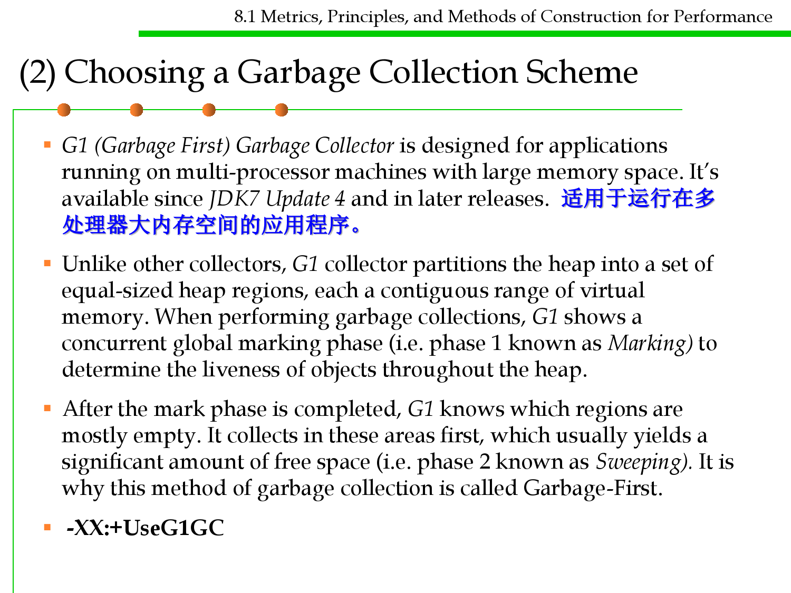
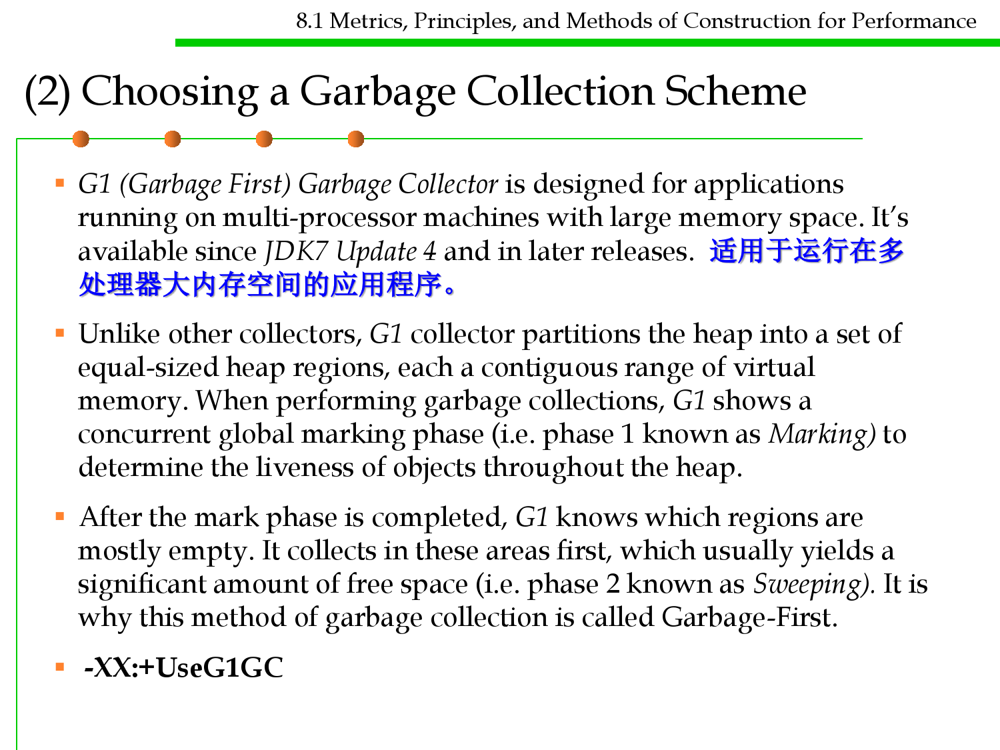
8.1 Metrics, Principles, and Methods of Construction for Performance
(2) Choosing a Garbage Collection Scheme
▪ G1 (Garbage First) Garbage Collector is designed for applications
running on multi-processor machines with large memory space. It’s
available since JDK7 Update 4 and in later releases. 适用于运行在多
处理器大内存空间的应用程序。
▪ Unlike other collectors, G1 collector partitions the heap into a set of
equal-sized heap regions, each a contiguous range of virtual
memory. When performing garbage collections, G1 shows a
concurrent global marking phase (i.e. phase 1 known as Marking) to
determine the liveness of objects throughout the heap.
▪ After the mark phase is completed, G1 knows which regions are
mostly empty. It collects in these areas first, which usually yields a
significant amount of free space (i.e. phase 2 known as Sweeping). It is
why this method of garbage collection is called Garbage-First.
▪ -XX:+UseG1GC

8.1 Metrics, Principles, and Methods of Construction for Performance
(3) Using verbose garbage collection
▪ The verbose garbage collection option (verbosegc) enables you to
measure exactly how much time and resources are put into garbage
collection.
-verbose:gc
▪ To determine the most effective heap size, turn on verbose garbage
collection and redirect the output to a log file for diagnostic
purposes. -Xloggc:日志文件路径
▪ From log file:
– How often is garbage collection taking place?
– How long is garbage collection taking? Full garbage collection should not
take longer than 3 to 5 seconds.
– What is your average memory footprint? In other words, what does the
heap settle back down to after each full garbage collection? If the heap
always settles to 85 percent free, you might set the heap size smaller.

8.1 Metrics, Principles, and Methods of Construction for Performance
(4) Manually request garbage collection
▪ You can manually request that the JVM perform garbage
collection.
▪ When you perform garbage collection, the JVM often examines
every living object in the heap.
▪ Garbage Collect calls the JVM’s System.gc() method to perform
garbage collection. The JVM implementation then decides whether
or not the request actually triggers garbage collection.

Software Construction
8 Using I/O Efficiently in Java
8.1 Metrics, Principles, and Methods of Construction for Performance
Speeding up I/O
▪ In software systems, the reading-writing speed of I/O is slower
than that of memory. I/O读写速度远低于内存
▪ Therefore, I/O reading and writing on many occasions will become
bottleneck of a system. I/O读写会成为系统的性能瓶颈
▪ Speeding up I/O has a great advantage to enhance the overall
performance of the system.
▪ A main technique to speed up I/O is buffer.
Buffer
8.1 Metrics, Principles, and Methods of Construction for Performance
▪ Data buffer (or just buffer) is a region of a physical memory storage
used to temporarily store data while it is being moved from one place
to another. 数据缓冲区是物理内存空间，用来临时存储数据
▪ Typically, the data is stored in a buffer as it is retrieved from an input
device (such as a microphone) or just before it is sent to an output
device (such as speakers).
▪ Buffers can be implemented in a fixed memory location in hardware—
or by using a virtual data buffer in software, pointing at a location in
the physical memory. In all cases, the data stored in a data buffer are
stored on a physical storage medium.
▪ A majority of buffers are implemented in software, which typically use
the faster RAM to store temporary data, due to the much faster access
time compared with hard disk drives. 通常用软件实现buffer机制，利
用速度快的RAM
Buffer
8.1 Metrics, Principles, and Methods of Construction for Performance
▪ Buffers are typically used when there is a difference between the rate
at which data is received and the rate at which it can be processed, or
in the case that these rates are variable, for example in a printer
spooler or in online video streaming. 缓冲区通常用于接收数据的速率
与处理数据速率之间存在较大差异的情况下，或者在速率可变的情况
下（例如打印机池或在线视频流）。
▪ 上层应用组件不需要等待下层组件真实地接受全部数据，即可返回操
作，加快了上层组件的处理速度，从而提升系统整体性能。
8.1 Metrics, Principles, and Methods of Construction for Performance
Using Buffer to speed up I/O
▪ E.g., FileWriter in Java
Writer writer = new FileWriter(new File(“file.txt”));
long begin = System.currentTimeMillis();
for (int i=0; i< CIRCLE; i++){
writer.write(i);
}
Set CIRCLE to 100,000
Running time of the original program is 63ms;
Running time of the program with buffer is 20ms;
Writer.close();
System.out.println(“testFileWriter spend:” +
(System.currentTimeNillis() - begin));
Writer writer = new BufferedWriter(new FileWriter(new File(“file.txt”)));
8.1 Metrics, Principles, and Methods of Construction for Performance
A brief, sad history of I/O in Java

1: Stream
8.1 Metrics, Principles, and Methods of Construction for Performance
/**
* Reads all lines from a text file and prints them.
* Uses Java 1.0-era (circa 1996) Streams to read the file.
*/
public class StreamCat {
public static void main(String[] args) throws IOException {
DataInputStream dis = new DataInputStream(
new FileInputStream(args[0]));
// Don't do this! DataInputStream.readLine is DEPRECATED!
String line;
while ((line = dis.readLine()) != null)
System.out.println(line);
}
}

2: Reader
8.1 Metrics, Principles, and Methods of Construction for Performance
/**
* Reads all lines from a text file and prints them.
* Uses Java 1.1-era (circa 1997) Streams to read the file.
*/
public class ReaderCat {
public static void main(String[] args) throws IOException {
try (BufferedReader rd = new BufferedReader(
new FileReader(args[0]))) {
String line;
while ((line = rd.readLine()) != null) {
System.out.println(line);
// you could also wrap System.out in a PrintWriter
}
}
}
}

3: Nio
8.1 Metrics, Principles, and Methods of Construction for Performance
/**
* Reads all lines from a text file and prints them.
* Uses nio FileChannel and ByteBuffer.
*/
public class NioCat {
public static void main(String[] args) throws IOException {
ByteBuffer buf = ByteBuffer.allocate(512);
try (FileChannel ch = FileChannel.open(Paths.get(args[0]),
StandardOpenOption.READ)) {
int n;
while ((n = ch.read(buf)) > -1) {
System.out.print(new String(buf.array(), 0, n));
buf.clear();
}
}
}
}

4: Scanner
8.1 Metrics, Principles, and Methods of Construction for Performance
/**
* Reads all lines from a text file and prints them
* Uses Java 5 scanner.
*/
public class ScannerCat {
public static void main(String[] args) throws IOException {
try (Scanner s = new Scanner(new File(args[0]))) {
while (s.hasNextLine())
System.out.println(s.nextLine());
}
}
}

5: Lines
8.1 Metrics, Principles, and Methods of Construction for Performance
/**
* Reads all lines from a text file and prints them. Uses Files,
* Java 8-era Stream API (not IO Streams!) and method references.
*/
public class LinesCat {
public static void main(String[] args) throws IOException {
Files.lines(Paths.get(args[0])).forEach(System.out::println);
}
}

8.1 Metrics, Principles, and Methods of Construction for Performance
Java I/O Recommendations
▪ Everyday use – Buffered{Reader, Writer}
▪ Casual use - Scanner
– Easy but not general and swallows exceptions
▪ Stream integration – Files.lines
– No parallelism support yet
▪ Async – java.nio.AsynchronousFileChannel 异步文件通道
▪ Many niche APIs, e.g. memory mapping, line numbering
– Search them out as needed 还有很多有用的API,根据需要使用
▪ Consider Okio if third party API allowed
8.1 Metrics, Principles, and Methods of Construction for Performance
NIO: New I/O
▪ Prior to the J2SE 1.4 release of Java, I/O had become a bottleneck.
▪ The old java.io stream classes had too many software layers to be
fast: 旧的java io stream类有太多的软件层，影响速度
– The specification implied much copying of small chunks of data;
– There was no way to multiplex data from multiple sources without
incurring thread context switches;
– There was no way to exploit modern OS tricks for high performance I/O,
like memory mapped files.

8.1 Metrics, Principles, and Methods of Construction for Performance
NIO: New I/O
▪ New I/O changes that by providing:
– A hierarchy of dedicated buffer classes that allow data to be moved from
the JVM to the OS with minimal memory-to-memory copying, and
without expensive overheads like switching byte order; effectively buffer
classes give Java a “window” on system memory. 通过一组buffer类，允
许将数据从JVM移动到OS，只需最少的内存间复制。
– A unified family of channel classes that allow data to be fed directly from
buffers to files and sockets, without going through the intermediaries of
the old stream classes. 统一的通道类，允许数据直接从缓冲区输入到文件
和sockets.
– A family of classes to directly implement selection (AKA readiness testing,
AKA multiplexing) over a set of channels.
– NIO also provides file locking for the first time in Java. 首次在Java中提供
了文件锁定
8.1 Metrics, Principles, and Methods of Construction for Performance
NIO: New I/O

8.1 Metrics, Principles, and Methods of Construction for Performance
Buffers in NIO
▪ A Buffer object is a container for a fixed amount of data.
▪ It behaves something like a byte [] array, but is encapsulated in
such a way that the internal storage can be a block of system
memory.
– Thus adding data to, or extracting it from, a buffer can be a very direct
way of getting information between a Java program and the underlying
operating system.
– All modern OS’s provide virtual memory systems that allow memory
space to be mapped to files, so this also enables a very direct and high-
performance route to the file system.
– The data in a buffer can also be efficiently read from, or written to, a
socket or pipe, enabling high performance communication.
▪ The buffer APIs allow you to read or write from a specific location
in the buffer directly; they also allow relative reads and writes,
similar to sequential file access.
8.1 Metrics, Principles, and Methods of Construction for Performance
The java.nio.Buffer Hierarchy
8.1 Metrics, Principles, and Methods of Construction for Performance
Fields of Buffer
▪ 容量(Capacity)：The maximum number of data elements a buffer
can hold, which is set when buffer is created and cannot be
changed. 缓冲区能够容纳的数据元素的最大数量，在缓冲区创建时被
设定，不能改变。
▪ 上界(Limit)： The first element of the buffer that cannot be read or
written. In other words, the count of existing elements in the
buffer. 缓冲区的第一个不能被读或写的元素。或者说，缓冲区中现存
元素的计数。
▪ 位置(Position)： The index of the next element to be read or
written which is automatically updated by the corresponding get ()
and put () methods. 下一个要被读或写的元素的索引，会自动由相应
的 get( )和 put( )方法更新。
▪ 标记(Mark)： An index that specifies a particular position in the
buffer, and then recovers to that position by calling the reset ()
method. Buffer中一个特定的position，之后可以通过调用reset()方法
恢复到这个position。
8.1 Metrics, Principles, and Methods of Construction for Performance
Buffer Objects (Empty/Fill)

8.1 Metrics, Principles, and Methods of Construction for Performance
File Position and Limit
▪ The limit property defines either the last space available for
writing, or how much data has been written to the file.
– After finishing writing a flip() method can be called to set limit to the
current value of position, and reset position to zero, ready for reading.
▪ Various operations implicitly work on the data between position
and limit.

8.1 Metrics, Principles, and Methods of Construction for Performance
File Position and Limit
▪ Apart from forms with an index parameter, these are all relative
operations: they get data from, or insert data into, the buffer
starting at the current position in the buffer; they also update the
position to point to the position after the read or written data. The
position property is like the file pointer in sequential file access.
▪ The superclass Buffer has methods for explicitly manipulating the
position and related properties of buffers, e.g:
– int position()
– Buffer position(int newPosition)
– int limit()
– Buffer limit(int newLimit)
– The ByteBuffer or Buffer references returned by these various methods are
simply references to this buffer object, not new buffers. They are provided
to support cryptic invocation chaining. Feel free to ignore them.

8.1 Metrics, Principles, and Methods of Construction for Performance
The ByteBuffer Class
▪ The most important buffer class in practice is probably the
ByteBuffer class. This represents a fixed-size vector of primitive
bytes.
▪ Important methods on this class include:
– byte get()
– byte get(int index)
– ByteBuffer get(byte [] dst)
– ByteBuffer get(byte [] dst, int offset, int length)
– ByteBuffer put(byte b)
– ByteBuffer put(int index, byte b)
– ByteBuffer put(byte [] src)
– ByteBuffer put(byte [] src, int offset, int length)
– ByteBuffer put(ByteBuffer src)

8.1 Metrics, Principles, and Methods of Construction for Performance
Creating Buffers
▪ Four factory methods can be used to create a new ByteBuffer:
– ByteBuffer allocate(int capacity)
– ByteBuffer allocateDirect(int capacity)
– ByteBuffer wrap(byte [] array)
– ByteBuffer wrap(byte [] array, int offset, length)
▪ These are all static methods of the ByteBuffer class.
– allocate() creates a ByteBuffer with an ordinary Java backing array of size
capacity.
– allocateDirect()—perhaps the most interesting case—creates a direct
ByteBuffer, backed by capacity bytes of system memory.
– The wrap() methods create ByteBuffer’s backed by all or part of an array
allocated by the user.
▪ The other typed buffer classes (CharBuffer, etc) have similar
factory methods, except allocateDirect() method.

8.1 Metrics, Principles, and Methods of Construction for Performance
Other Primitive Types in ByteBuffer
▪ It is possible to write other primitive types (char, int, double, etc)
to a ByteBuffer by methods like:
– ByteBuffer putChar(char value)
– ByteBuffer putChar(int index, char value)
– ByteBuffer putInt(int value)
– ByteBuffer putInt(int index, int value)
–…
▪ The putChar() methods do absolute or relative writes of the two
bytes in a Java char, the putInt() methods write 4 bytes, and so on.
– Of course there are corresponding getChar(), getInt(), … methods.

8.1 Metrics, Principles, and Methods of Construction for Performance
Other Primitive Types in ByteBuffer
▪ These give you fun, unsafe ways of coercing bytes of one primitive
type to another type, by writing data as one type and reading them
as another.
▪ But actually this isn’t the interesting bit—this was always possible
with the old java.io DataStream’s.
▪ The interesting bit is that the new ByteBuffer class has a method
that allows you to set the byte order…

8.1 Metrics, Principles, and Methods of Construction for Performance
View Buffers
▪ ByteBuffer has no methods for bulk transfer of arrays other than
type byte[].
▪ Instead, create a view of (a portion of) a ByteBuffer as any other
kind of typed buffer, then use the bulk transfer methods on that
view. Following methods of ByteBuffer create views:
– CharBuffer asCharBuffer()
– IntBuffer asIntBuffer()
–…
– To create a view of just a portion of a ByteBuffer, set position and limit
appropriately beforehand—the created view only covers the region
between these.
– You cannot create views of typed buffers other than ByteBuffer.
– You can create another buffer that represents a subsection of any buffer
(without changing element type) by using the slice() method.

8.1 Metrics, Principles, and Methods of Construction for Performance
View Buffers
▪ For example, writing an array of floats to a byte buffer, starting at
the current position:
– float [] array ;
–…
– FloatBuffer floatBuf = byteBuf.asFloatBuffer() ;
– floatBuf.put(array) ;

Channels
8.1 Metrics, Principles, and Methods of Construction for Performance
▪ A channel is a new abstraction in java.nio.
– In the package java.nio.channels.
▪ Channels are a high-level version of the file-descriptors familiar
from POSIX-compliant operating systems.
– So a channel is a handle for performing I/O operations and various
control operations on an open file or socket.
▪ For those familiar with conventional Java I/O, java.nio associates a
channel with any RandomAccessFile, FileInputStream,
FileOutputStream, Socket, ServerSocket or DatagramSocket object.
– The channel becomes a peer to the conventional Java handle objects; the
conventional objects still exist, and in general retain their role—the
channel just provides extra NIO-specific functionality.
▪ NIO buffer objects can written to or read from channels directly
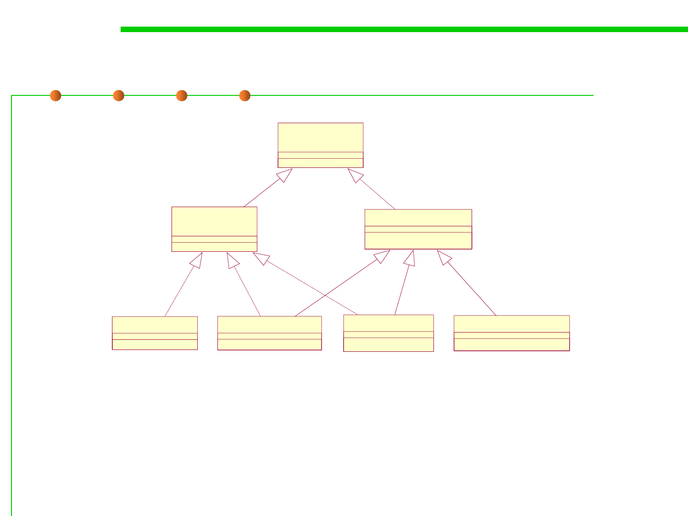
8.1 Metrics, Principles, and Methods of Construction for Performance
Simplified Channel Hierarchy
<<<Interface>>>
Channel
<<<interface>>>
ByteChannel
SelectableChannel
FileChannel
DatagramChannel
SocketChannel
ServerSocketChannel
Some of the “inheritance” arcs here are indirect: we missed
out some interesting intervening classes and interfaces.

8.1 Metrics, Principles, and Methods of Construction for Performance
Opening Channels
▪ Socket channel classes have static factory methods called open(),
e.g.:
– SocketChannel sc = SocketChannel.open() ;
– Sc.connect(new InetSocketAddress(hostname, portnumber)) ;
▪ File channels cannot be created directly; first use conventional Java
I/O mechanisms to create a FileInputStream, FileOutputStream, or
RandomAccessFile, then apply the new getChannel() method to get
an associated NIO channel, e.g.:
– RandomAccessFile raf = new RandomAccessFile(filename, “r”) ;
– FileChannel fc = raf.getChannel() ;

8.1 Metrics, Principles, and Methods of Construction for Performance
Using Channels
▪ Any channel that implements the ByteChannel interface—i.e. all
channels except ServerSocketChannel—provide a read() and a
write() instance method:
– int read(ByteBuffer dst)
– int write(ByteBuffer src)
– These may look reminiscent of the read() and write() system calls in UNIX:
• int read(int fd, void* buf, int count)
• int write(int fd, void* buf, int count)
– The Java read() attempts to read from the channel as many bytes as there
are remaining to be written in the dst buffer. Returns number of bytes
actually read, or -1 if end-of-stream. Also updates dst buffer position.
– Similarly write() attempts to write to the channel as many bytes as there
are remaining in the src buffer. Returns number of bytes actually read,
and updates src buffer position.
 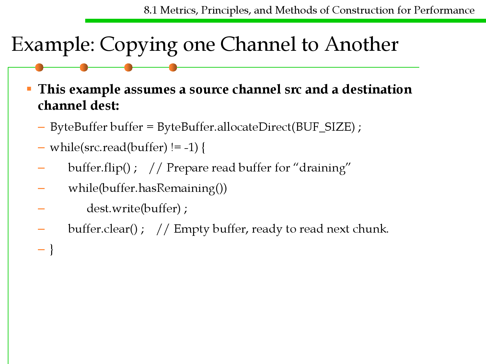
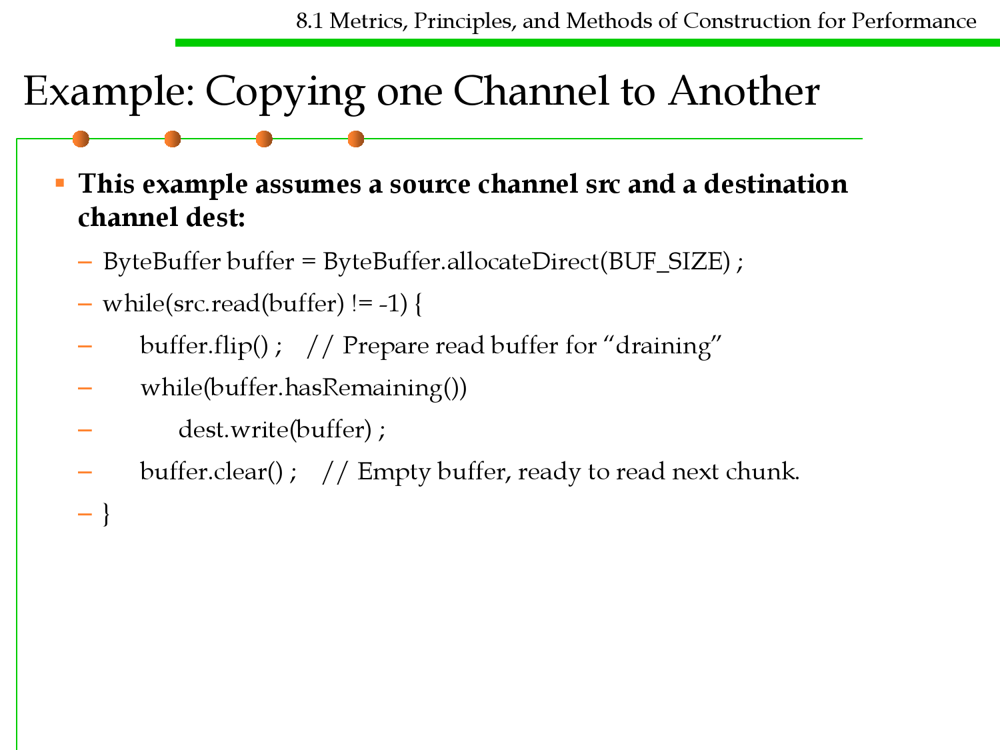
8.1 Metrics, Principles, and Methods of Construction for Performance
Example: Copying one Channel to Another
▪ This example assumes a source channel src and a destination
channel dest:
– ByteBuffer buffer = ByteBuffer.allocateDirect(BUF_SIZE) ;
– while(src.read(buffer) != -1) {
– buffer.flip() ; // Prepare read buffer for “draining”
– while(buffer.hasRemaining())
–
dest.write(buffer) ;
– buffer.clear() ; // Empty buffer, ready to read next chunk.
–}

8.1 Metrics, Principles, and Methods of Construction for Performance
Example: Copying one Channel to Another
– Note a write() call (or a read() call) may or may not succeed in transferring
whole buffer in a single call. Hence need for inner while loop.
– Example introduces two new methods on Buffer: hasRemaining() returns
true if position < limit; clear() sets position to 0 and limit to buffer’s
capacity.
– Because copying is a common operation on files, FileChannel provides a
couple of special methods to do just this:
• long transferTo(long position, long count, WriteableByteChannel target)
• long transferFrom(ReadableByteChannel src, long position, long count)

8.1 Metrics, Principles, and Methods of Construction for Performance
Memory-Mapped Files
▪ In modern operating systems one can exploit the virtual memory
system to map a physical file into a region of program memory.
– Once the file is mapped, accesses to the file can be extremely fast: one
doesn’t have to go through read() and write() system calls.
– One application might be a Web Server, where you want to read a whole
file quickly and send it to a socket.
– Problems arise if the file structure is changed while it is mapped—use this
technique only for fixed-size files.
▪ This low-level optimization is now available in Java. FileChannel
has a method:
– MappedByteBuffer map(MapMode mode, long position, long size)
– mode should be one of MapMode.READ_ONLY,
MapMode.READ_WRITE, MapMode.PRIVATE.
– The returned MappedByteBuffer can be used wherever an ordinary
ByteBuffer can.


8.1 Metrics, Principles, and Methods of Construction for Performance
Scatter/Gather
▪ Often called vectored I/O, this just means you can pass an array of
buffers to a read or write operation; the overloaded channel
instance methods have signatures:
– long read(ByteBuffer [] dsts)
– long read(ByteBuffer [] dsts, int offset, int length)
– long write(ByteBuffer [] srcs)
– long write(ByteBuffer [] srcs, int offset, int length)
▪ The first form of read() attempts to read enough data to fill all
buffers in the array, and divides it between them, in order.
▪ The first form of write() attempts to concatenate the remaining data
in all buffers and write it.
– The arguments offset and length select a subset of buffers from the arrays
(not, say, an interval within buffers).


8.1 Metrics, Principles, and Methods of Construction for Performance
SocketChannels
▪ As mentioned at the beginning of this section, socket channels are
created directly with their own factory methods
– If you want to manage a socked connection as a NIO channel this is the
only option. Creating NIO socket channel implicitly creates a peer
java.net socket object, but (contrary to the situation with file handles) the
converse is not true.
▪ As with file channels, socket channels can be more complicated to
work with than the traditional java.net socket classes, but provide
much of the hard-boiled flexibility you get programming sockets
in C.
▪ The most notable new facilities are that now socket
communications can be non-blocking, they can be interrupted, and
there is a selection mechanism that allows a single thread to do
multiplex servicing of any number of channels.

8.1 Metrics, Principles, and Methods of Construction for Performance
Basic Socket Channel Operations
▪ Typical use of a server socket channel follows a pattern like:
ServerSocketChannel ssc = ServerSocketChannel.open() ;
ssc.socket().bind( new InetSocketAddress(port) ) ;
while(true) {
SocketChannel sc = ssc.accept() ;
… process a transaction with client through sc …}
▪ The client does something like:
SocketChannel sc = SocketChannel.open() ;
sc.connect( new InetSocketAddr(serverName, port) ) ;
… initiate a transaction with server through sc …
▪ The elided code above will typically be using read() and write()
calls on the SocketChannel to exchange data between client and
server.
– So there are four important operations: accept(), connect(), write(), read() .

8.1 Metrics, Principles, and Methods of Construction for Performance
Other Features of Channels
▪ File channels provide a quite general file locking facility. This is
presumably important to many applications (database
applications), but less obviously so to HPC operations, so we don’t
discuss it here.
▪ There is a DatagramChannel for sending UDP–style messages.
This may well be important for high performance communications,
but we don’t have time to discuss it.
▪ There is a special channel implementation representing a kind of
pipe, which can be used for inter-thread communication.

An example
8.1 Metrics, Principles, and Methods of Construction for Performance
public static void nioCopyFile(String resource, String destination)
throws IOException {
FileInputStream fis = new FileInputStream(resource);
FileOutputStream fos = new FileOutputStream(destination);
FileChannel readChannel = fis.getChannel();
FileChannel writeChannel = fos.getChannel();
ByteBuffer buffer = ByteBuffer.allocate(1024*8);
while (true) {
buffer.clear();
int len = readChannel.read(buffer);
if (len == -1) {
break;
}
buffer.flip();
writeChannel.write(buffer);
}
readChannel.close();
writeChannel.close();
}

Software Construction
The end
May 13, 2019